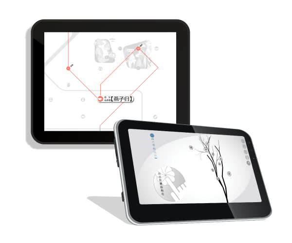
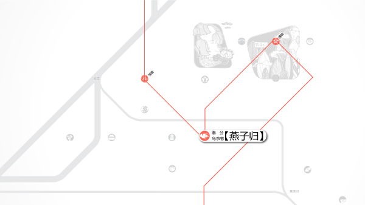

Peaceful Pneuma 以气宁人
Basic Info
Type: APP / Game
Tool: AI / PS / Android SDK / Processing
Device: SAMSUNG Galaxy Note 10.1
Team member: 1
Work in charge: Concept / Visual / Demo Programming
Requirement & Purpose
Peaceful Pneuma was a game app for children to learn about the folklore in Nanjing classified by the solar terms of Chinese tradition.
In coporation with the Nanjing Folk Museum, the app was intended to develop the O2O activities based on the concept of the games.
The app involved generative algorithm, digital aesthetics, sensors of smartphone and creative coding.

Tablet demo

Rendering of the main menu
UI elements of the main menu
Illustrations of the main menu
Game for Lichun (Beginning of Spring)
Happy Drama of the Five Gods
Music education game
This game is a music composing and playing game based on traditional drama called “Wuchangxi”.
The five icons are coresponded to the five directions, five traditional colors and five music samples. By moving the icons among the positions, the player can change the playback speed-rate of each sample. And the player may also enjoy the default setting of the actual drama music.
Game for Xiazhi (Summer Solstice)
Find the Cicada in the Platanus
Concentration Development Game
The player need to tilt the device to move the lens and find the position of the cicada accroding to the volume of its chirp. Then rotate and remove the leave on it to fully uncover the cicada. Rotating too fast will fright it away!
The game aims to help the children with the development of concentration. And the random algotithm makes the game never the same twice.
Game for Shuangjiang (Frost's Descent)
Appreciate the Red Leaves
Parametric Generating Game
Players can choose different shapes of the leaves and adjust their color. The algorithm will generate the full pattern according to the leaves put onto the branch.

Game for Daxue (Great Snow)
Draw the Wintersweet
Generative Aesthetics Game
Automatically generate the tree and branches by the algorithm. Players can tap the screen to generate new flowers and delete it by tapping the back button.
Offline Activity Bansed on the Game for Daxue
Players can print out their own drawings of the wintersweet and paint one petal into red everyday. After painting all the 81 petals into red, the winter will pass away and the spring will arrive, according to the Chinese tradition. This is developed from the custom played by the unmarried young ladies in ancient China.